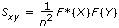
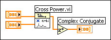

Computes the cross power spectrum, Sxy, of the input signals X and Y. Wire data to the X input to determine the polymorphic instance to use or manually select the instance.
Sxy is the cross power spectrum of input signals X and Y.
error returns any error or warning from the VI. You can wire error to the Error Cluster From Error Code VI to convert the error code or warning into an error cluster.
Sxy is the cross power spectrum of input signals X and Y.
error returns any error or warning from the VI. You can wire error to the Error Cluster From Error Code VI to convert the error code or warning into an error cluster.
The cross power, Sxy(f) of the signals x(t) and y(t) is defined as
Sxy(f) = X*(f)Y(f)
where X*(f) is the complex conjugate of X(f),
X(f) = F{x(t)},
Y(f) = F{y(t)}.
This VI uses the FFT or DFT routine to compute the cross power spectrum, which is given by
,
where Sxy represents the complex sequence Sxy, and n is the number of samples that can accommodate both input sequences X and Y.
The largest cross power that the Cross Power VI can compute by the FFT is 223 (8,388,608 or 8M).
Note Some textbooks define the cross power spectrum as S'xy(f) = X(f)Y*(f). If you prefer this definition of cross power to the one specified in the Cross Power VI, take the complex conjugate of the output sequence Sxy. Because the Cross Power VI operates on the real and imaginary portions separately, you can use the following block diagram to obtain the results for S'xy(f).

When the number of samples in X and Y are equal and are a valid power of 2,
n = m = 2k
for k = 1, 2, 3,…, 23,
where n is the number of samples in X, and m is the number of samples in Y, the Cross Power VI makes direct calls to the FFT routine to compute the complex cross power sequence. This technique is efficient in both execution time and memory management because the Cross Power VI performs the operations in place.
When the number of samples in X and Y are not equal,
nm
where n is the number of samples in X, and m is the number of samples in Y, the Cross Power VI first resizes the smaller sequence by padding it with zeros to match the size of the larger sequence. If this size is a valid power of 2,
max(n,m) = 2k
for k = 1, 2, 3, …, 23,
the Cross Power VI computes the cross power spectrum using the FFT. Otherwise, the Cross Power VI uses the slower DFT to compute the cross power spectrum. Thus, the size of the complex output sequence is
 Add to the block diagram
Add to the block diagram Find on the palette
Find on the palette